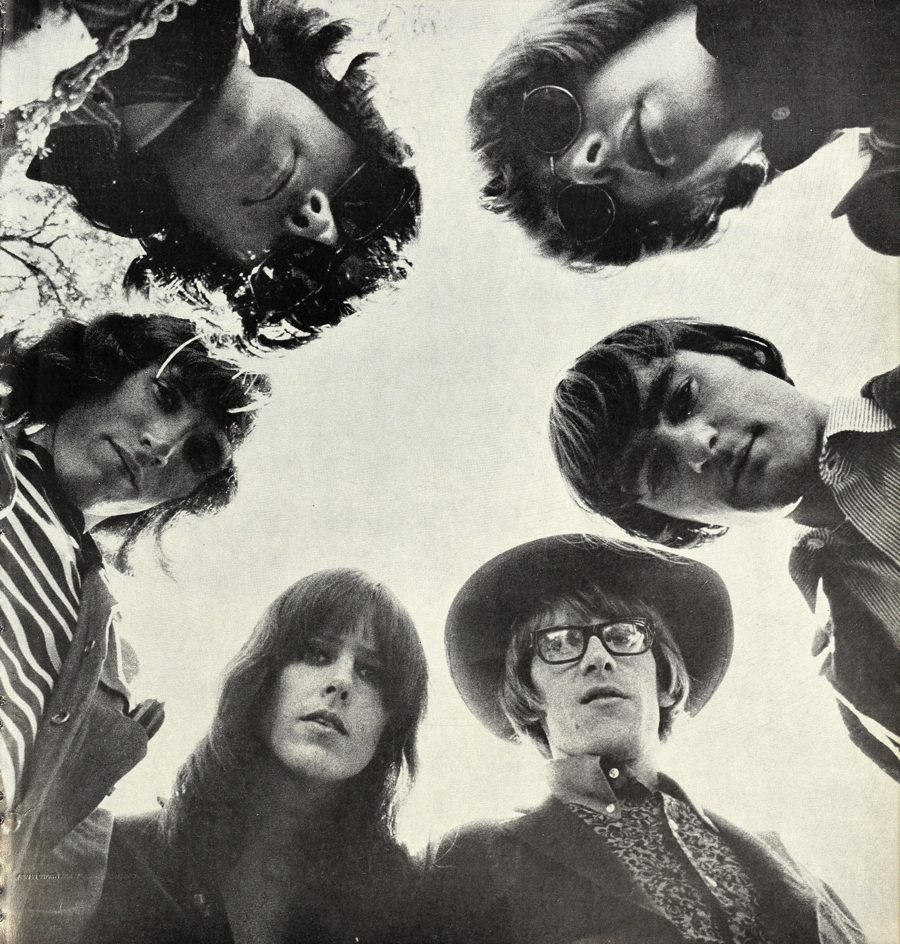

Jefferson Airplane formed in San Francisco in 1965 and became the first Bay Area band to win international commercial success.
Grace Slick joined in October 1966.
Months later, Surrealistic Pillow gave the group two Top 10 singles, "Somebody to Love" at No. 5 and "White Rabbit" at No. 8.

Table of Contents
- How the Band Formed at the Matrix
- Takes Off and the RCA Deal
- Grace Slick and Surrealistic Pillow
- Monterey, Woodstock and Altamont
- The Classic Lineup
- After 1969 and Legacy
- FAQ
How Jefferson Airplane Formed at the Matrix
Singer Marty Balin started the band in 1965, with a nightclub to go with it.
He and a group of investors turned a former pizza parlor on Fillmore Street into a club called the Matrix.
Balin wanted a group that followed the new folk rock sound of the mid-1960s.
The first lineup:
- Paul Kantner, a folk guitarist Balin met at a hootenanny at the Drinking Gourd
- Signe Toly Anderson, a singer Balin also heard at the Drinking Gourd
- Jorma Kaukonen, a blues guitarist and old friend of Kantner
- Bob Harvey on bass and Jerry Peloquin on drums
The band played its first show at the Matrix's opening night on August 13, 1965.
Guitarist Skip Spence soon replaced Peloquin on drums.
In October, Jack Casady, Kaukonen's friend from Washington, D.C., took over on bass.
Where the Name Came From
Kaukonen supplied the name.
His friend Steve Talbot had nicknamed him "Blind Thomas Jefferson Airplane," a joke on bluesman Blind Lemon Jefferson.
According to Kaukonen, the others kept proposing stupid names, so he offered one he called "really silly."
Takes Off and the RCA Deal
San Francisco Chronicle critic Ralph Gleason championed the group in print that September.
In November 1965 the band signed with RCA Victor for a $25,000 advance.
On December 10, 1965, they played the first Bill Graham show at the Fillmore Auditorium.
The first single was Balin's "It's No Secret," written with Otis Redding in mind.
After the debut album was cut, Spencer Dryden replaced Spence on drums in July 1966.
Jefferson Airplane Takes Off came out on August 15, 1966.
RCA dropped "Runnin' 'Round This World" from later pressings because executives objected to the word "trips."
Anderson had a baby that spring and left after a Fillmore show on October 15, 1966.
Grace Slick sang her first show with the band the next night.
Grace Slick and Surrealistic Pillow
Slick came from the Great Society, a local band that had often opened for the Airplane.
She brought two songs with her.
She had written "White Rabbit" herself, drawing on Lewis Carroll's Alice books.
Her brother-in-law Darby Slick wrote "Somebody to Love."
Both were recorded on November 3, 1966, at RCA Victor's studio in Hollywood, with producer Rick Jarrard.
Surrealistic Pillow came out on February 1, 1967, and peaked at No. 3 on the Billboard 200.
Jerry Garcia of the Grateful Dead helped on the sessions, named the album, and was credited as "spiritual advisor."
"Somebody to Love" reached No. 5 on the Hot 100, and "White Rabbit" reached No. 8.
The RIAA has since certified "White Rabbit" double platinum.
Weeks before the album came out, the band headlined the Human Be-In in Golden Gate Park on January 14, 1967.
The 1967 year guide covers the rest of the Summer of Love.
Monterey, Woodstock and Altamont
The band played the Monterey International Pop Festival in June 1967, on a bill that also featured The Jimi Hendrix Experience.
After Bathing at Baxter's followed late that year, built on long, multi-part suites.
It reached No. 17, and Kantner and Slick became the main songwriters.
Crown of Creation came out in September 1968 and reached No. 6.
That summer the band toured Europe with The Doors.
The 1968 year guide covers the rest of that year's music.
Volunteers arrived in November 1969 and reached No. 13.
It was their most political record, opposing the Vietnam War.
Kantner wrote "Wooden Ships" for it with David Crosby and Stephen Stills.
That August the band played Woodstock in an early-morning slot Slick called "morning maniac music."
In December, Balin was punched by a Hells Angel on stage at Altamont.
Jefferson Airplane were the only band to play all three of the decade's landmark festivals.
The 1969 year guide tells the rest of that year.
Press Play on any row below to hear the band's best-charting 1960s singles.
| Play | |||
|---|---|---|---|
| "Somebody to Love" | 1967 | Hot 100 No. 5 | |
| "White Rabbit" | 1967 | Hot 100 No. 8 | |
| "The Ballad of You and Me and Pooneil" | 1967 | Hot 100 No. 42 | |
| "Watch Her Ride" | 1967 | Hot 100 No. 61 | |
| "Crown of Creation" | 1968 | Hot 100 No. 64 | |
| "Volunteers" | 1969 | Hot 100 No. 65 |
Jefferson Airplane Members: The Classic Lineup
The classic lineup ran from October 1966 to February 1970:
- Marty Balin, vocals
- Grace Slick, vocals and keyboards
- Paul Kantner, rhythm guitar and vocals
- Jorma Kaukonen, lead guitar and vocals
- Jack Casady, bass
- Spencer Dryden, drums
Their sound sits at the center of our 1960s psychedelic rock guide.
After 1969 and Legacy
The other members voted Dryden out in February 1970.
Balin left in April 1971, and Kaukonen and Casady put more of their time into their blues band, Hot Tuna.
After 1973 the group split in two.
Slick, Kantner and the remaining players regrouped as Jefferson Starship in 1974.
The honors came later:
- 1996: the classic lineup entered the Rock and Roll Hall of Fame, inducted by Mickey Hart and Phil Lesh of the Grateful Dead
- 2016: a Grammy Lifetime Achievement Award
- "Somebody to Love" and "White Rabbit" both sit on Rolling Stone's list of the 500 Greatest Songs of All Time
For more of the decade's rock bands, see our 60s rock guide.
FAQ
Where did the name Jefferson Airplane come from?
Jorma Kaukonen suggested it.
A friend, Steve Talbot, had nicknamed him "Blind Thomas Jefferson Airplane" as a joke on the bluesman Blind Lemon Jefferson.
Kaukonen offered it to the band as something "really silly."
What are the band's greatest hits?
"Somebody to Love" reached No. 5 on the Hot 100 in 1967, and "White Rabbit" reached No. 8 the same year.
No later single reached the Billboard Top 40.
Who played guitar in the band?
Jorma Kaukonen played lead guitar and Paul Kantner played rhythm guitar.
Jack Casady played bass from October 1965.
Who sang White Rabbit?
Grace Slick sang it and wrote it.
She brought the song with her from her earlier band, the Great Society.
What happened to the band?
Kaukonen and Casady left to make Hot Tuna their full-time band in 1973.
Slick, Kantner and the remaining members regrouped as Jefferson Starship in 1974.
The classic lineup reunited for an album and tour in 1989.
The full history of Jefferson Airplane is on Wikipedia.
Back to the 1960smusic.net homepage to explore every genre of the decade.